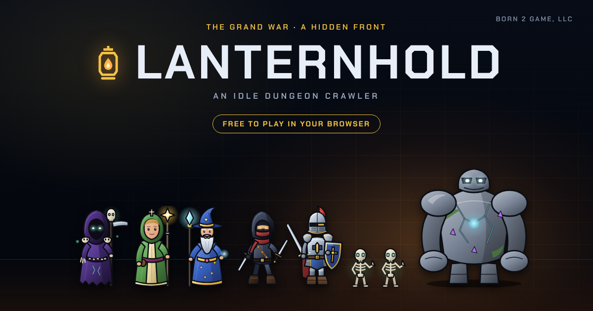
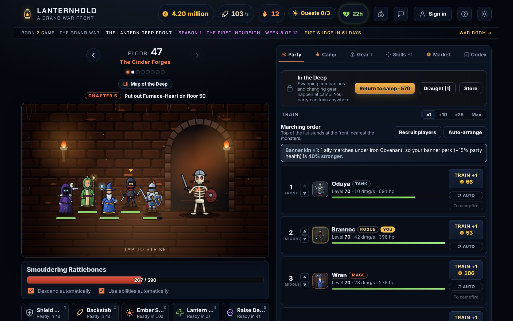
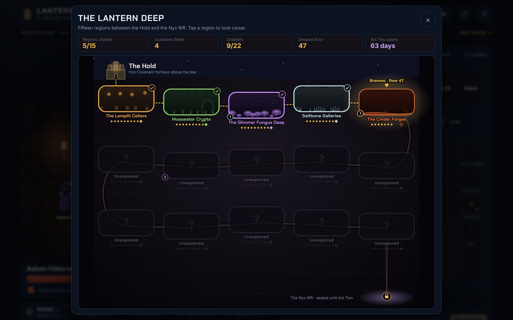
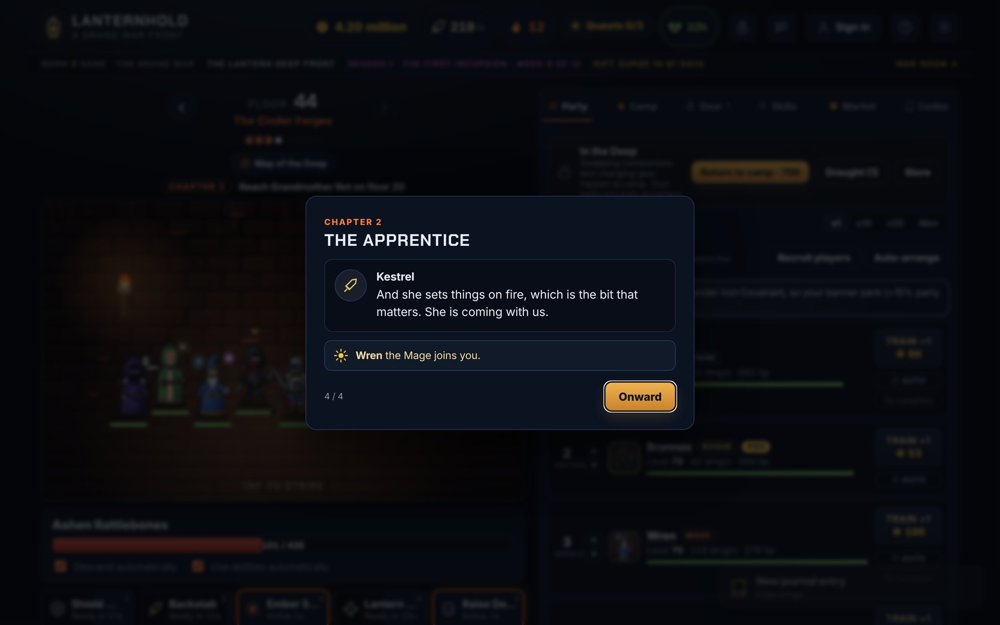
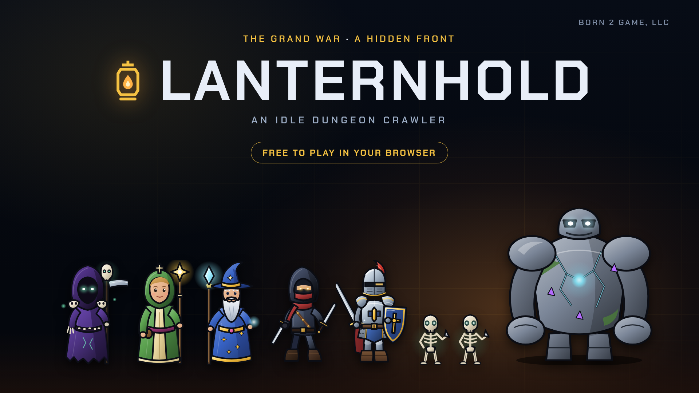

Press kit
Lanternhold
A free idle dungeon crawler for the browser. Lead a party of five down 150 floors beneath a forgotten fortress, on a hidden front of the Grand War.
- Developer
- Born 2 Game, LLC
- Release
- Early access on the web since November 2026. Act Two opens with Season 2 of the Grand War on January 25, 2027.
- Platforms
- Any modern browser, on desktop and phone. A Steam release is planned.
- Price
- Free to play. Optional Sigil packs buy cosmetics and convenience items. Money never buys combat power.
- Genre
- Idle / incremental RPG, dungeon crawler
- Play
- lanternhold.born2gamellc.com
- Universe
- The Grand War
About the game
Beneath a forgotten Iron Covenant fortress, a single lantern keeps a tear in the Nyx Rift shut. Every alliance in the Grand War wants what lies under it. You pick a hero, pledge a banner and carry the lantern down.
Lanternhold is an idle game that plays like a small party RPG. Your party of five fights on its own, even while you are away, but the fights are real: monsters strike back, the tank has to hold their attention, the healer has to keep up, and marching order matters. Guardians every few floors test the build you have put together.
Between floors there is a camp to manage, gear to loot and compare, a skill tree for your hero, and a story told in chapters that unlock as you go deeper. Act One spans 15 regions and 150 floors and runs the length of the Grand War's first season.
It is always multiplayer. Other players' heroes can join your party through the Players Guild, and yours can join theirs. There is chat, a player market and mail, and community events tied to the wider Grand War.
History
Lanternhold is the Lantern Deep front of the Grand War, an original setting from Born 2 Game. It started as a small web idler in November 2026 and has grown week by week from player feedback, with each change credited in the in-game patch notes.
Features
A party that matters
Five classes: Tank, Healer, Rogue, Mage and Necromancer. Monsters hit back, so roles and marching order decide the fight.
150 floors, 15 regions
From the Lamplit Cellars to the Rift Threshold, with a guardian boss at the end of each stretch.
A story in chapters
A guided campaign with companions who join, argue and surprise you, plus lore pages found along the way.
Loot with real choices
Rarities, class gear, item sets with set bonuses and random stats, across 13 gear slots.
Camp and companions
Ten campfire companions to recruit and train. Those resting at camp work jobs that help the whole party.
Play with other people
Borrow other players' heroes, lend yours, chat, trade on the market and send mail.
Progress while away
Your party keeps earning while the tab is closed. Cloud saves follow you between devices.
Fair by design
Free to play. Paid items are cosmetic or convenience only, and Sigils can also be earned in play.
Screenshots










Logos and key art
Free to use in coverage, videos and listings about Lanternhold.


Contact
For press, streaming and partnership questions, reach Born 2 Game through born2gamellc.com.
Streamers and video creators are welcome to monetize videos of Lanternhold. No permission needed.